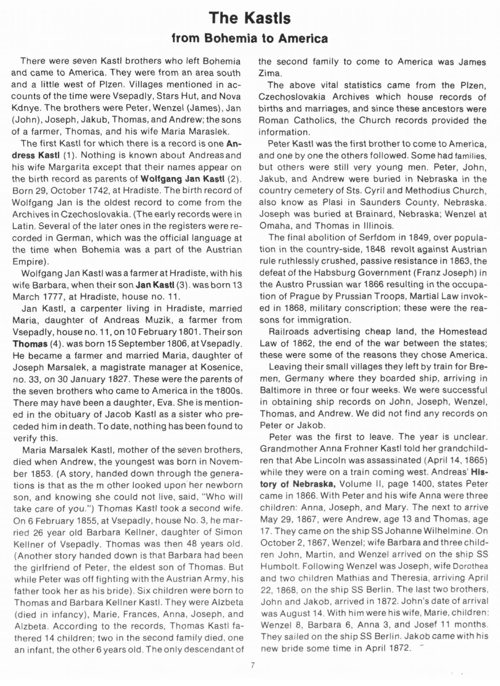

The book · The Kastls: from Bohemia to America
Page 7 The Kastls


Transcription
The Kastls
from Bohemia to America
There were seven Kastl brothers who left Bohemia and came to America. They were from an area south and a little west of Plzen. Villages mentioned in accounts of the time were Vsepadly, Stars Hut, and Nova Kdnye. The brothers were Peter, Wenzel (James), Jan (John), Joseph, Jakub, Thomas, and Andrew; the sons of a farmer, Thomas, and his wife Maria Maraslek.
The first Kastl for which there is a record is one Andress Kastl (1). Nothing is known about Andreas and his wife Margarita except that their names appear on the birth record as parents of Wolfgang Jan Kastl (2). Born 29, October 1742, at Hradiste. The birth record of Wolfgang Jan is the oldest record to come from the Archives in Czechoslovakia. (The early records were in Latin. Several of the later ones in the registers were recorded in German, which was the official language at the time when Bohemia was a part of the Austrian Empire).
Wolfgang Jan Kastl was a farmer at Hradiste, with his wife Barbara, when their son Jan Kastl (3). was born 13 March 1777, at Hradiste, house no. 11.
Jan Kastl, a carpenter living in Hradiste, married Maria, daughter of Andreas Muzik, a farmer from Vsepadly, house no. 11, on 10 February 1801. Their son Thomas (4). was born 15 September 1806, at Vsepadly. He became a farmer and married Maria, daughter of Joseph Marsalek, a magistrate manager at Kosenice, no. 33, on 30 January 1827. These were the parents of the seven brothers who came to America in the 1800s. There may have been a daughter, Eva. She is mentioned in the obituary of Jacob Kastl as a sister who preceded him in death. To date, nothing has been found to verify this.
Maria Marsalek Kastl, mother of the seven brothers, died when Andrew, the youngest was born in November 1853. (A story, handed down through the generations is that as the m other looked upon her newborn son, and knowing she could not live, said, "Who will take care of you.") Thomas Kastl took a second wife. On 6 February 1855, at Vsepadly, house No. 3, he married 26 year old Barbara Kellner, daughter of Simon Kellner of Vsepadly. Thomas was then 48 years old. (Another story handed down is that Barbara had been the girlfriend of Peter, the eldest son of Thomas. But while Peter was off fighting with the Austrian Army, his father took her as his bride). Six children were born to Thomas and Barbara Kellner Kastl. They were Alzbeta (died in infancy), Marie, Frances, Anna, Joseph, and Alzbeta. According to the records, Thomas Kastl fathered 14 children; two in the second family died, one an infant, the other 6 years old. The only descendant of the second family to come to America was James Zima.
The above vital statistics came from the Plzen, Czechoslovakia Archives which house records of births and marriages, and since these ancestors were Roman Catholics, the Church records provided the information.
Peter Kastl was the first brother to come to America, and one by one the others followed. Some had families, but others were still very young men. Peter, John, Jakub, and Andrew were buried in Nebraska in the country cemetery of Sts. Cyril and Methodius Church, also know as Plasi in Saunders County, Nebraska. Joseph was buried at Brainard, Nebraska; Wenzel at Omaha, and Thomas in Illinois.
The final abolition of Serfdom in 1849, over population in the country-side, 1848 revolt against Austrian rule ruthlessly crushed, passive resistance in 1863, the defeat of the Habsburg Government (Franz Joseph) in the Austro Prussian war 1866 resulting in the occupation of Prague by Prussian Troops, Martial Law invoked in 1868, military conscription; these were the reasons for immigration.
Railroads advertising cheap land, the Homestead Law of 1862, the end of the war between the states; these were some of the reasons they chose America.
Leaving their small villages they left by train for Bremen, Germany where they boarded ship, arriving in Baltimore in three or four weeks. We were successful in obtaining ship records on John, Joseph, Wenzel, Thomas, and Andrew. We did not find any records on Peter or Jakob.
Peter was the first to leave. The year is unclear. Grandmother Anna Frohner Kastl told her grandchildren that Abe Lincoln was assassinated (April 14, 1865) while they were on a train coming west. Andreas' History of Nebraska, Volume II, page 1400, states Peter came in 1866. With Peter and his wife Anna were three children: Anna, Joseph, and Mary. The next to arrive May 29, 1867, were Andrew, age 13 and Thomas, age 17. They came on the ship SS Johanne Wilhelmine. On October 2, 1867, Wenzel; wife Barbara and three children John, Martin, and Wenzel arrived on the ship SS Humbolt. Following Wenzel was Joseph, wife Dorothea and two children Mathias and Theresia, arriving April 22, 1868, on the ship SS Berlin. The last two brothers, John and Jakob, arrived in 1872. John's date of arrival was August 14. With him were his wife, Marie, children: Wenzel 8, Barbara 6, Anna 3, and Josef 11 months. They sailed on the ship SS Berlin. Jakob came with his new bride some time in April 1872.
People from the line of descent on this page
- Andreas Kastl
- Margarita
- Wolfgang Jan Kastl b. 1742
- Barbara
- Jan Kastl b. 1777
- Maria Mužik b. 1784
- Andreas Mužik
- Thomas Kastl b. 1806
- Maria Marsalek d. 1853
- Josef Marsalek
- Barbara Kellner b. 1828
- Simon Kellner
- Eva Kastl
- Andrew Kastl 1853–1906
- Jacob Kastl 1847–1935
- Alzbeta Nemecek 1849–1921
- John Kastl 1835–1890
- Josef Kastl 1840–1921
- Dorota Blaha 1833–1919
- Peter Kastl 1827/1828–1903
- Thomas Kastl 1850–1904
- Wenzel Kastl b. 1831
- Barbara Blachnik d. 1909
- John Kastl 1861/1862–1936
- Martin Kastl b. 1864
- James Zima b. 1905
Transcriber’s notes
Two-column text; bold names preserved with **. Print inconsistencies kept as printed: 'Maria Maraslek' in first paragraph vs 'Marsalek' later; 'Andress Kastl' (bold) vs 'Andreas' in next sentence; 'Born 29, October 1742'; '(3). was born' / '(4). was born'; 'm other'; 'also know as Plasi'; 'Humbolt'. The chapter continues on page 8 (s010), but page 7 ends at a paragraph end, so no sentence runs over.